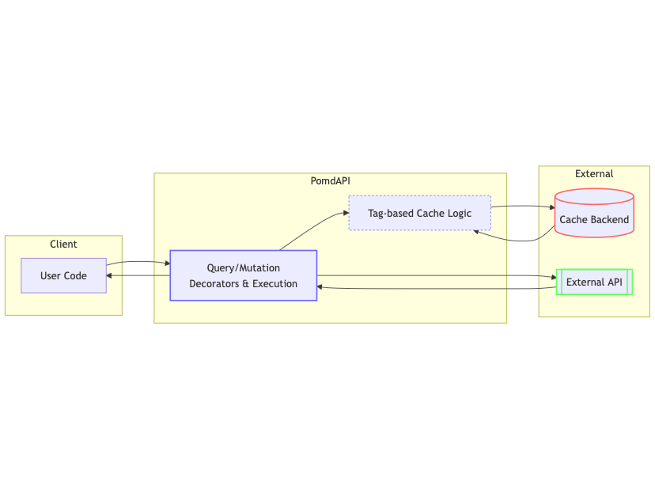

Introduction¶
PomdAPI¶
PomdAPI is a Python library that brings a FastAPI-style developer experience to strongly-typed API clients. Inspired by FastAPI’s clarity, we needed a way to define multi-protocol API calls—HTTP, JSON-RPC, XML-RPC—without getting tangled in repetitive boilerplate.
That’s why we built PomdAPI: a clean, typed approach for both sync and async calls, enhanced by tag-based caching and invalidation. If you want minimal fuss, typed models, and painless caching for your APIs, we hope PomdAPI becomes your go-to choice.
Why use PomdAPI?¶
🎯 Declarative Endpoints
Define your queries and mutations in a single, clear place using decorators. This means you can outline how to fetch or update data—whether it’s GitHub issues or Ethereum balances—without repeating request logic.
🚀 Expandable Architecture
Enjoy out-of-the-box support for HTTP, JSON-RPC, and XML-RPC calls, with a straightforward pattern for adding any custom protocol. All protocols share the same consistent API interface, so you can reuse logic and tooling across diverse data sources.
🔒 Type safe
Built with Python type hints (Generics) and Pydantic models, giving you both static time checks and runtime validation. This helps prevent bugs and ensures predictable data structures across your codebase.
⚡ Automatic Sync/Async
Use the same function in synchronous or asynchronous contexts—no code duplication necessary. Whether you’re in a simple script or an async-based web framework, the library adapts seamlessly.
🔖 Tag-Based Invalidation
Speed up your application by reducing unnecessary requests and handling partial data updates. Choose from in-memory, Memcached, Redis, or implement your own custom caching backend.

Whether you’re building a small prototype or a large-scale service, these features help keep your code clean, consistent, and reliable. For more hands-on guides, check out our Getting Started page or explore the Examples of how you can integrate PomdAPI into real-world projects.
To learn more about each feature, check out our Features page or dive straight into the Getting Started guide.
Example¶
In Beta
PomdAPI is in early beta, the API might be still subject to change.
from pomdapi.api.http import HttpApi, RequestDefinition
from pomdapi.cache.in_memory import InMemoryCache
# Create an API instance with in-memory caching
api = HttpApi.from_defaults(
base_query_config=BaseQueryConfig(base_url="https://api.example.com"),
cache=InMemoryCache()
)
# Define deserialized response type
class UserProfile(BaseModel):
id_: str = Field(alias="id")
name: str
age: int
# Define a query endpoint
@api.query("getUserProfile", response_type=UserProfile)
def get_user_profile(user_id: str):
return RequestDefinition(
method="GET",
url=f"/users/{user_id}"
), Tag("userProfile", id=user_id)
@api.mutate("updateUserProfile")
def change_user_name(user_id: str, name: str):
return RequestDefinition(
method="PATCH",
url=f"/users/{user_id}",
body={"name": name}
), Tag("userProfile", id=user_id)
# Use the function in the default async context
async def main():
profile = await get_user_profile(user_id="123")
# or in a sync context
def main():
profile = get_user_profile(is_async=False, user_id="123")
# Invalidate the userProfile tag
change_user_name(is_async=False, user_id="123", name="New Name")
# Need to refetch the userProfile
get_user_profile(is_async=False, user_id="123")
print(profile)
FastAPI vs. PomdAPI: An Inversion¶
FastAPI is a server framework that uses parameter decorators to build endpoints. For example, you write code like:
from fastapi import FastAPI
app = FastAPI()
@app.get("/item/{item_id}")
def read_user(item_id: int):
...
Here, FastAPI uses the function signature (e.g., item_id, q) to parse incoming requests, inject them as arguments, and produce a server response.
from pomdapi.api.http import HttpApi
api = HttpApi(...)
@api.query("getItem")
def get_item(item_id: str, q: str | None = None):
return RequestDefinition(
method="GET",
url="/items/{item_id}",
)
)
| FastAPI (Server) | PomdAPI (Client) | |
|---|---|---|
| What it does? | Exposes a path like /items/{item_id}. The function runs when that path is requested. | Parametrizes a client call to that path (or another remote service). The function returns a “request definition” that includes how to fetch or mutate data. |
| Parameter usage | Extract request parameters from path/query, injecting them into the function signature. | Use function parameters to dynamically build the request config—URL, method, etc. The library then executes the request and returns (or caches) the response. |
| Result | A server-side function that runs for incoming requests. | A client-side function that makes requests to a remote server, with caching and tagging built-in. |
Conclusion
By removing the heavy lifting typically associated with data fetching and caching logic, this library lets you focus on delivering value to your users. It leverages a modular and type-friendly architecture, supports multiple transport protocols, and offers both sync and async flows to fit a variety of Python use cases—all in one cohesive package.
Contributing¶
Contributions are welcome! Please feel free to submit a Pull Request.